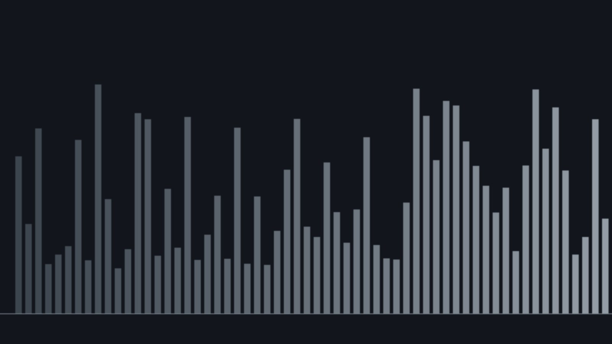
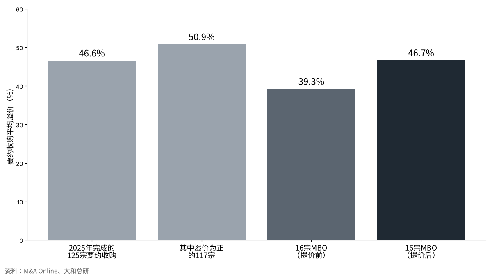

日本要约收购平均溢价46.6%。有维权股东参与的私有化，价格更高吗？——用2025年125宗要约收购、16宗MBO与丰田自动织机的提价检验
日本维权股东（激进投资者）的活动创下新高，退市的公司也在增加。据东京商工调查，2025年以退市为前提的要约收购有80家、管理层收购（MBO）有32家，合计112家。
在私有化中，买方以高于市价的价格收购股份，高出的部分称为溢价。维权股东经常提出这一价格过低。
本文的问题是：有维权股东参与的私有化，溢价是否更高？
- 2025年完成的125宗要约收购平均溢价为46.64%，仅看溢价为正的117宗则为50.88%。
- 2025年6月至11月公布的16宗MBO中，平均溢价从提价前的39.3%升至提价后的46.7%，上升7.4个百分点。提价多因股东反对。
- 丰田自动织机在美国艾略特反对后，收购价由每股16,300日元提高到20,600日元，涨幅26.4%。平均而言维权股东把溢价推高几个百分点，在单个案例中则可能推动价格超过两成。

问题与背景
先统一用语。要约收购（TOB）是指在市场之外，明示期限与价格，向股东收购股份的方式。以私有化为目的的要约收购成功后，买方再收购剩余股东的股份并退市。
溢价表示收购价比公布前的股价高出多少。例如公布前股价1,000日元、收购价1,500日元，溢价即为50%。用于比较的股价，可以是前一天的收盘价，也可以是1个月或3个月的平均价。
维权股东是指持股后，要求公司增加分红或调整资本用途的投资者。日本综合研究所列出容易成为目标的公司的五个特征：市净率低、负债少、现金多、金融机构持股少、外国投资者持股多。
私有化增多的背景，是东京证券交易所2023年提出的“重视资本成本与股价的经营”要求，以及维持上市标准的收紧。据大和总研，2024年东证退市公司达94家，创历史新高。应对维权股东，也被视为维持上市的成本之一。
数据与方法
本文使用四类资料。第一，M&A Online统计的2025年开始并完成的要约收购中，剔除非上市公司后125宗的平均溢价。第二，大和总研对2025年6月至11月公布的16宗MBO的分析，列出了提价前后的平均值。
第三，东京商工调查对2025年以退市为前提的要约收购与MBO的统计，可以看到买方类型与失败案例。第四，以丰田自动织机的私有化作为单个大型案例。
我们没有找到按是否有维权股东持股划分案例、直接比较平均值的公开统计。因此，本文以提价幅度，作为维权股东及普通股东的反对推动价格的程度的参考。
结果
| 指标 | 数值 | 资料 |
|---|---|---|
| 2025年完成的要约收购（剔除非上市，125宗）平均溢价 | 46.64% | M&A Online |
| 其中溢价为正的117宗平均 | 50.88% | M&A Online |
| 16宗MBO（2025年6〜11月）提价前平均 | 39.3% | 大和总研 |
| 同·提价后 | 46.7% | 大和总研 |
| 2025年以退市为前提的要约收购与MBO | 112家（要约收购80、MBO32） | 东京商工调查 |
| 其中买方为基金（含维权股东） | 22家（约三成） | 东京商工调查 |
| 丰田自动织机收购价 | 16,300日元→20,600日元（+26.4%） | 报道与公告 |
2025年完成的125宗要约收购平均溢价为46.64%，溢价为正的117宗则为50.88%。2025年让一家上市公司私有化，通常要在市价上加价五成左右。
在大和总研整理的16宗MBO中，平均溢价提价前为39.3%，提价后为46.7%，上升7.4个百分点。截至2026年1月，12宗成功、2宗失败、2宗延长了收购期限。

失败的案例清楚显示了维权股东的作用。据东京商工调查，Soft99与Wavelock控股在公布MBO后，被既有股东和维权股东要求提价，最终应募未达下限而失败。Soft99随后由基金发起不以退市为前提的竞争性要约收购，并获得成功。
单个案例中变动最大的是丰田自动织机。2025年6月提出每股16,300日元的私有化要约，最初价格低于市价。在艾略特管理公司反对后，价格提高到20,600日元，涨幅26.4%。该要约于2026年3月成功，总额约5.9万亿日元，是日本企业之间规模最大的并购。
东京商工调查显示，2025年公布以退市为前提的要约收购或MBO的112家公司中，有5家失败。比例不足5%，但其中包括因股东反对而使价格成为焦点的案例。价格过低，私有化本身就可能无法成立。
价格为何会被提高
在MBO中，管理层是买方，与出售股份的股东利益冲突。大和总研指出，设立由外部委员组成的特别委员会、由第三方评估股份价值等体现公正性的程序已成为标准。即便程序齐备，对价格本身的不满也不会消失。
据大和总研，即使溢价高达45〜50%，把收购价定在市净率1倍以下的公司，仍受到普通股东对价格是否合理的批评。相对市价的溢价再高，只要低于公司净资产，股东就会觉得被低价收购。维权股东通常抓住的正是这一点。
东京商工调查显示，2025年要约收购中最多的买方是包括维权股东在内的基金，共22家，约占三成。基金既站在以股东身份对价格发声的一方，也站在以买方身份出价的一方。私有化的价格，就是在这样的博弈中决定的。
敏感性分析
维权股东能把价格推高多少，因案例而异。这里假设公布时溢价为40%，按反对后的提价幅度分三种情形计算。
不提价时，股东得到的溢价仍为40%。若像大和总研16宗的平均那样提价约5.3%，相对公布前股价的溢价约为47%。若像丰田自动织机那样提价26.4%，溢价则扩大到约77%。
平均来看，维权股东的效果只有几个百分点；但逐个来看，公布时价格越低，反对推动的幅度就越大。公布时低于市价的丰田自动织机，正是极端的例子。
局限
第一，本文未能使用按股东名册中是否有维权股东划分案例的统计。提价不仅来自维权股东，也来自普通股东和特别委员会的判断，不能把提价幅度全部视为维权股东的效果。
第二，各资料计算溢价所用的股价不同，有的用前一天收盘价，有的用3个月平均价。公布前股价已经上涨的案例，溢价会显得较小。
第三，失败或未公布的案例不在平均值内。如果有公司因维权股东要求高价而放弃私有化，这部分不会体现在数字中。
结论
2025年日本的私有化，通常要在市价上加价五成左右。在MBO中，股东的反对使平均溢价提高约7个百分点，也有像丰田自动织机那样价格变动超过两成的案例。现有数据还不足以断定有维权股东参与的私有化价格更高，但反对之声推高价格的路径，在数字上已经可以看到。
对上市公司的股东来说，私有化是无法自己选择卖出时机的事件。如果认为公布价格相对净资产或市价偏低，可以选择不应募。对非上市企业的经营者来说，能够免于这种压力，也是不上市的理由之一。
参考资料
- 东京商工调查：2025年以退市为前提的要约收购与MBO共112家（日文） https://www.tsr-net.co.jp/data/detail/1202318_1527.html
- 大和总研：近期MBO案例的特点，2026年1月27日（日文） https://www.dir.co.jp/report/consulting/ma_valuation/20260127_025531.pdf
- M&A Online：2025年要约收购溢价排名（日文） https://maonline.jp/db/tob/2025/ranking_premiere
- 日本综合研究所：维权股东动向与上市公司的应对，2026年4月23日（日文） https://www.jri.co.jp/report/researchfocus/detail/16651/
- 大和总研：增加的退市与维权投资者，2025年3月3日（日文） https://www.dir.co.jp/report/column/20250303_012229.html
- 第一生命经济研究所：持有的股票遇到MBO怎么办，2026年6月8日（日文） https://www.dlri.co.jp/files/asset/617820.pdf
- the-shashi：丰田自动织机私有化（日文） https://the-shashi.com/tse/6201/decisions/take-private-toyota-2025/
- 路透社（新闻周刊日本版）：外资收购日本企业创新高（日文） https://www.newsweekjapan.jp/articles/-/328158
图表与题图由YUKI CAPITAL制作。本文为笔者自己的记录，不构成投资建议。
每天的数字和判断，我都记录在X上。